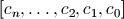
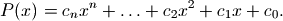
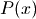
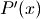
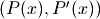
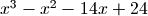
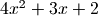
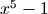

Polynomials¶
See also taylor() and chebyfit() for approximation of functions by polynomials.
Polynomial evaluation (polyval)¶
- mpmath.polyval(ctx, coeffs, x, derivative=False)¶
Given coefficients  and a number
 ,
polyval() evaluates the polynomial
,
polyval() evaluates the polynomial
If derivative=True is set, polyval() simultaneously evaluates  with the derivative, , and returns the tuple .
>>> from mpmath import * >>> mp.pretty = True >>> polyval([3, 0, 2], 0.5) 2.75 >>> polyval([3, 0, 2], 0.5, derivative=True) (2.75, 3.0)
The coefficients and the evaluation point may be any combination of real or complex numbers.
Polynomial roots (polyroots)¶
- mpmath.polyroots(ctx, coeffs, maxsteps=50, cleanup=True, extraprec=10, error=False)¶
Computes all roots (real or complex) of a given polynomial. The roots are returned as a sorted list, where real roots appear first followed by complex conjugate roots as adjacent elements. The polynomial should be given as a list of coefficients, in the format used by polyval(). The leading coefficient must be nonzero.
With error=True, polyroots() returns a tuple (roots, err) where err is an estimate of the maximum error among the computed roots.
Examples
Finding the three real roots of :
>>> from mpmath import * >>> mp.dps = 15; mp.pretty = True >>> nprint(polyroots([1,-1,-14,24]), 4) [-4.0, 2.0, 3.0]
Finding the two complex conjugate roots of , with an error estimate:
>>> roots, err = polyroots([4,3,2], error=True) >>> for r in roots: ... print r ... (-0.375 + 0.59947894041409j) (-0.375 - 0.59947894041409j) >>> >>> err 2.22044604925031e-16 >>> >>> polyval([4,3,2], roots[0]) (2.22044604925031e-16 + 0.0j) >>> polyval([4,3,2], roots[1]) (2.22044604925031e-16 + 0.0j)
The following example computes all the 5th roots of unity; that is, the roots of :
>>> mp.dps = 20 >>> for r in polyroots([1, 0, 0, 0, 0, -1]): ... print r ... 1.0 (-0.8090169943749474241 + 0.58778525229247312917j) (-0.8090169943749474241 - 0.58778525229247312917j) (0.3090169943749474241 + 0.95105651629515357212j) (0.3090169943749474241 - 0.95105651629515357212j)
Precision and conditioning
Provided there are no repeated roots, polyroots() can typically compute all roots of an arbitrary polynomial to high precision:
>>> mp.dps = 60 >>> for r in polyroots([1, 0, -10, 0, 1]): ... print r ... -3.14626436994197234232913506571557044551247712918732870123249 -0.317837245195782244725757617296174288373133378433432554879127 0.317837245195782244725757617296174288373133378433432554879127 3.14626436994197234232913506571557044551247712918732870123249 >>> >>> sqrt(3) + sqrt(2) 3.14626436994197234232913506571557044551247712918732870123249 >>> sqrt(3) - sqrt(2) 0.317837245195782244725757617296174288373133378433432554879127
Algorithm
polyroots() implements the Durand-Kerner method [1], which uses complex arithmetic to locate all roots simultaneously. The Durand-Kerner method can be viewed as approximately performing simultaneous Newton iteration for all the roots. In particular, the convergence to simple roots is quadratic, just like Newton’s method.
Although all roots are internally calculated using complex arithmetic, any root found to have an imaginary part smaller than the estimated numerical error is truncated to a real number. Real roots are placed first in the returned list, sorted by value. The remaining complex roots are sorted by real their parts so that conjugate roots end up next to each other.
References